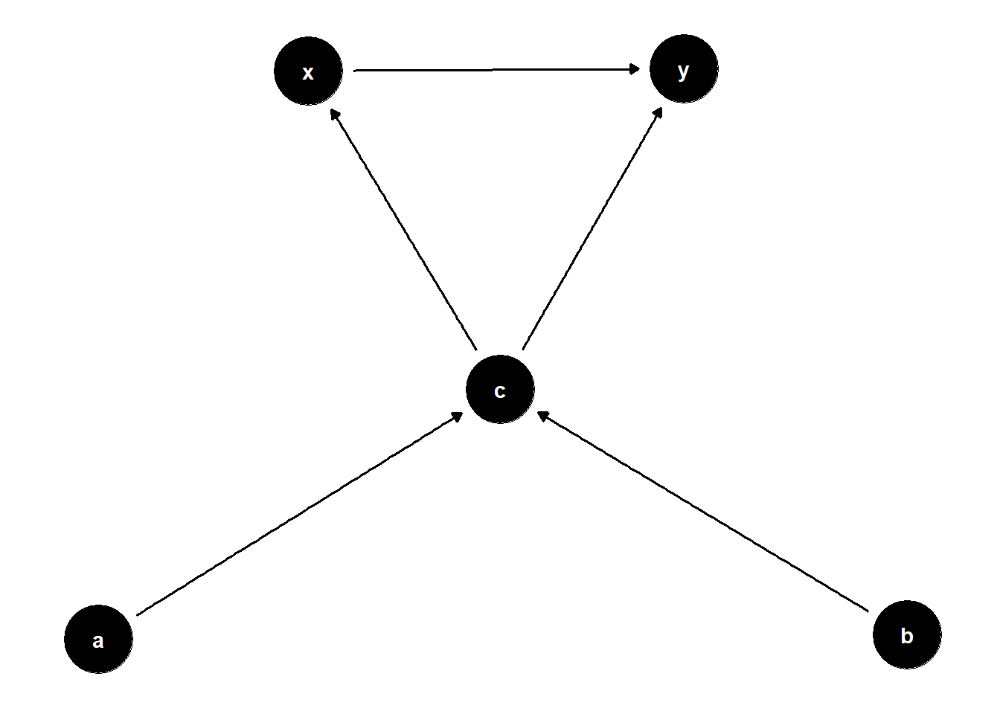

Code
library(tidyverse)
library(ggdag)
theme_set(theme_dag()) # setting the theme
dag = dagify(
x ~ cc,
y ~ x + cc,
cc ~ a + b,
exposure = "x",
outcome = "y"
)
dag |>
ggdag(
layout = "nicely")
To Adjust or Not Adjust?
Ryan Batten
October 26, 2023
For valid causal inference, we need adjust for confounders to block all backdoor paths. If we don’t, this can lead to bias. We also need to not adjust for colliders because that can open a backdoor path. In a perfect world, these two types of variables would never overlap however sometimes a variable is both a collider and a confounder. So what do we do in this case? How can we find a solution?
One way to answer this question is through simulation….which is exactly what we’ll do! For this post, we’ll just focus on a simple scenario that we can build upon later. With that in mind we need to setup some parameters: what do we want to call the variables,how are these variables related (enter DAG), what types of variables are they (binary, continuous, time-to-event) and how are we going to compare the methods.
Let’s come up with some variable names to keep track of things. We’ll use X for the exposure/treatment, Y for the outcome and CC for this variable that’s both a confounder and a collider (confounder/collider = cc). For the two variables that cause CC, let’s call them A and B for simplicity. All of these are arbitrarily chosen names (although X and Y are common conventions for exposure/outcome (and Z for confounders))
For this example, we’ll assume that A is a binary variable, B is a continuous variable and CC is a continuous variable. Additionally, we’ll assume that X is a binary variable (yes/no for treatment) and Y is our continuous outcome variable. These were all arbitrarily chosen and can be changed for other scenarios. For this example, simplicity is key. We can always make it more complicated later.
For this scenario, we’ll just look at bias. From Morris, White, and Crowther (2019), the equation for bias is:
\[ \frac{1} {n_{sim}}\sum_{i=1}^{n_{sim}}{\hat{\theta}_i - \theta} \]
We’ll use the Monte Carlo standard error of the estimate as well (also from Morris, White, and Crowther (2019)):
\[ \sqrt{\frac{1} {n_{sim} (n_{sim}-1)}\sum_{i=1}^{n_{sim}}{(\hat{\theta}_i - \overline{\theta}})^2} \]
Alright, let’s get into coding!
set.seed(123) # First setting a seed for reproducibility
# Loading Libraries
library(tidyverse)
library(broom) # for cleaning output of models
n = 430 # setting our sample size
a = rbinom(n = n, size = 1, prob = 0.46) # Simulating A from a binomial distribution
b = rnorm(n = n, mean = 5, sd = 2) # Simulating B from a normal distribution
cc = 0.7*a + 0.3*b #assuming that CC is caused by both A and B
x = rbinom(n = n, size = 1, prob = plogis(0.1*cc)) # Simulating X from a binomial distribution that is caused by CC
y = rnorm(n = n) + 0.2*cc + 0.4*x # Assuming Y is caused by CC and X
df = data.frame(
a,
b,
cc,
x,
y
)
mod.adj <- glm(y ~ x + cc,
family = gaussian(link = "identity"),
data = df)
coeff.adj = broom::tidy(mod.adj)[2,2]
mod.unadj <- glm(y ~ x,
family = gaussian(link = "identity"),
data = df)
coeff.unadj = broom::tidy(mod.unadj)[2, 2]Now we can see how they’d be different. Let’s look at both estimates. For the adjusted model we have 0.4195327 and for the unadjusted model we have 0.4206856. This is only after running it one time though! We need to re-run it more than once though. To do this, we can put our code from before into a function.
# We'll make a function that we can specifc the treatment effect, the strength of the confounder (on the outcome and exposure. Assuming that it affects both equally, which could also be changed/examind)
sim_col_con <- function(trt_effect,
con_effect,
n.sample){
#
a = rbinom(n = n.sample, size = 1, prob = 0.46)
b = rnorm(n = n.sample, mean = 5, sd = 2)
cc = 0.5 + 0.7*a + 0.3*b
x = rbinom(n = n.sample, size = 1, prob = plogis(con_effect*cc))
y = 3 + con_effect*cc + trt_effect*x + rnorm(n = n.sample, mean = 0, sd = 1)
df = data.frame(
a,
b,
cc,
x,
y
)
# Adjusting for variable
mod.adj <- glm(y ~ x + cc,
family = gaussian(link = "identity"),
data = df)
adj.trt.effect <- broom::tidy(mod.adj)$estimate[2]
# Not adjusting for variable
mod.unadj <- glm(y ~ x,
family = gaussian(link = "identity"),
data = df)
unadj.trt.effect <- broom::tidy(mod.unadj)$estimate[2]
df.trt.effects <- data.frame(
adj.trt.effect,
unadj.trt.effect
)
return(
df.trt.effects
)
}Great now we have our function! Let’s do it a bunch of times.
For this quick example, we’ll repeat it 1000 times. In reality, more thought should go into the number of simulations required. I would suggest Morris, White, and Crowther (2019) for more details regarding that. For now, let’s proceed with 1000.
Great! Now we have our simulations, time to start calculating some results!
We’ll calculated the estimated bias and the Monte Carlo standard error of the bias.
# Bias
bias.adjust = round((1/430)*sum(df.out$adj.trt.effect - 0.4),3)
bias.unadjust = round((1/430)*sum(df.out$unadj.trt.effect - 0.4),3)
# SE of the bias
se.adjust = round((1/(429*430)) * sum((df.out$adj.trt.effect - mean(df.out$adj.trt.effect))^2),3)
se.unadjust = round((1/(429*430)) * sum((df.out$unadj.trt.effect - mean(df.out$unadj.trt.effect))^2),3)
results.adjust = paste0(bias.adjust, " (", se.adjust, ")")
results.unadjust = paste0(bias.unadjust, " (", se.unadjust, ")")Great! Now let’s interpret these results. For adjusted estimate, its -0.002 (0) and for the unadjusted estimate its 0.101 (0)
Based on our simple example, my takeaway would be to adjust for the confounder even if it is a collider. However…and a big however…this is under a lot of circumstances that we could build upon. What if both A and B were continuous? What if they were both binary? What if the outcome were binary? What if CC was binary? These are just a few places to start. The good news is that we have the simple scenario covered so we can easily try out these out scenarios and see what we’d do!
This post was just meant to be a starting point. If you’re interested in different scenarios, I’d recommend you try altering pieces of the code and see how that impacts the results! If you’re new to simulating data, I’d also recommend perhaps starting with another post on my blog (Simulating Data).
If you do expand on this or have any ideas about it, I’d love to hear about them (either through email or LinkedIn). Happy exploring!